鹰之团 · 参赛方案附图总览
目录：参赛方案/figures/。全部图已按项目真实证据生成，Nano 底图仅用于 A/E/I 并已标注“AI 辅助概念示意图”。
fig-A-场景概念图.png（1239 KB）
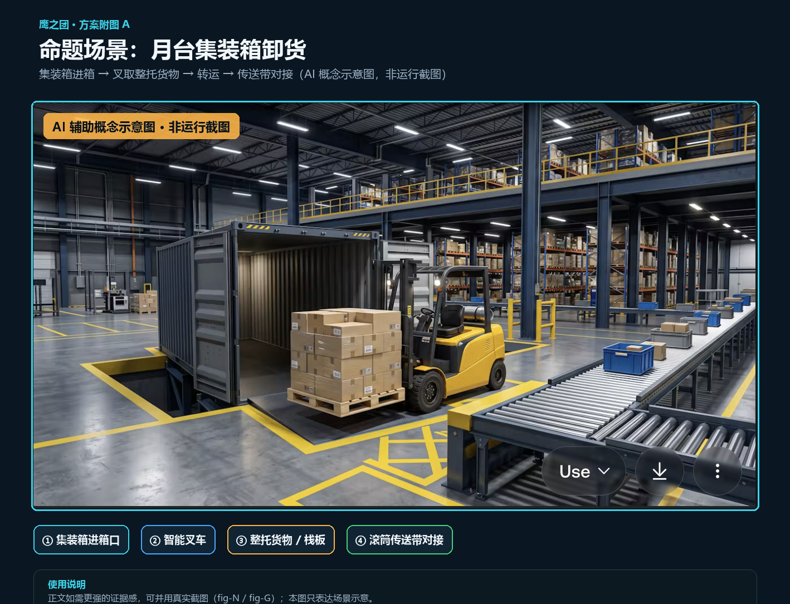
fig-C-四层架构总览.png（229 KB）
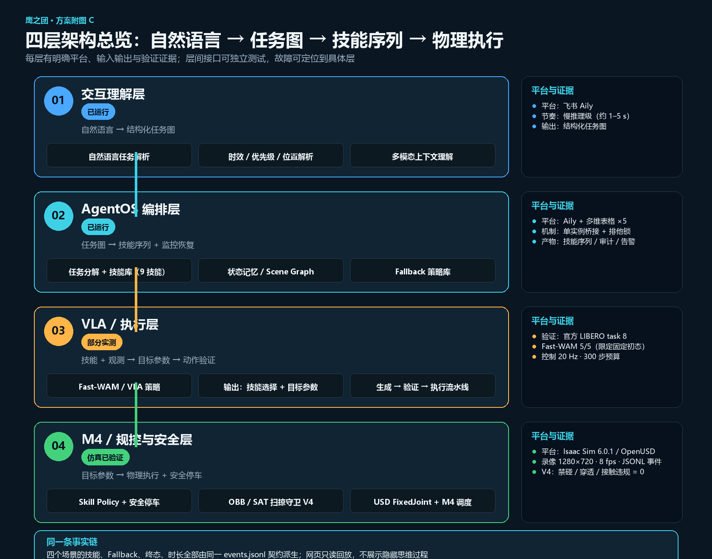
fig-D-九技能链与Fallback状态机.png（142 KB）
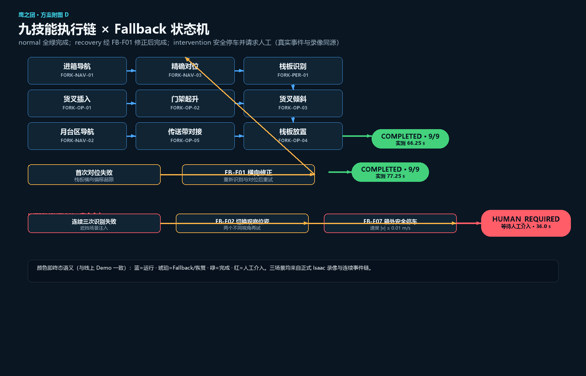
fig-E-FastWAM概念插画.png（1471 KB）
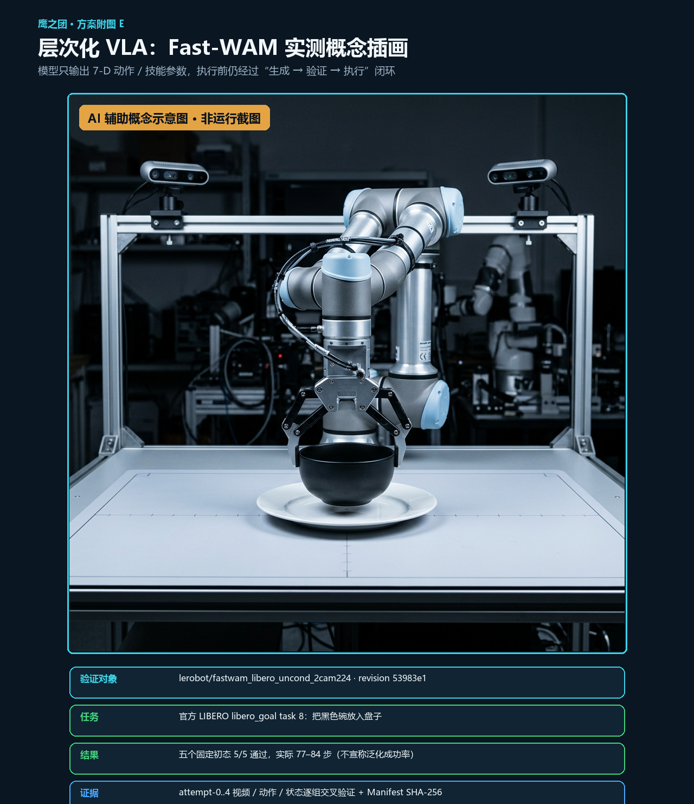
fig-F-单一事实源证据链.png（110 KB）
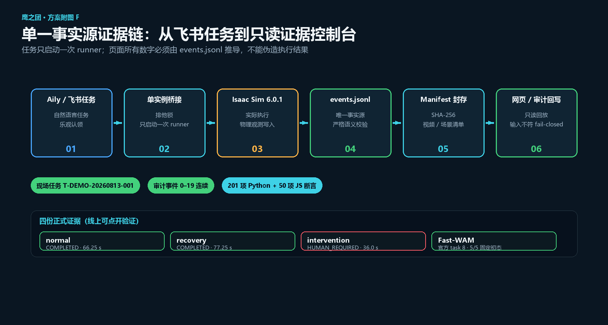
fig-G-线上Demo界面四宫格.png（1300 KB）
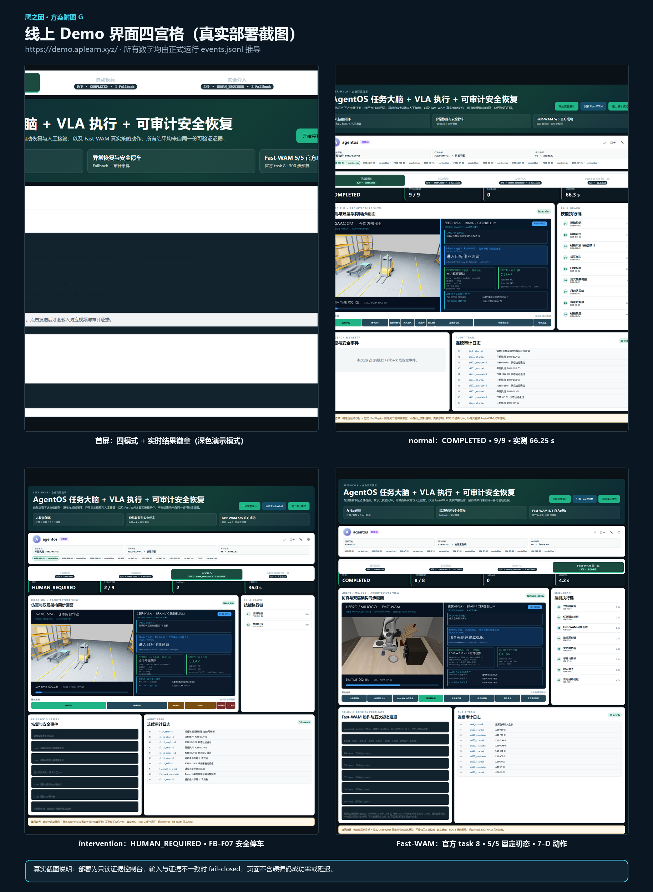
fig-H-方案价值量化对比.png（91 KB）
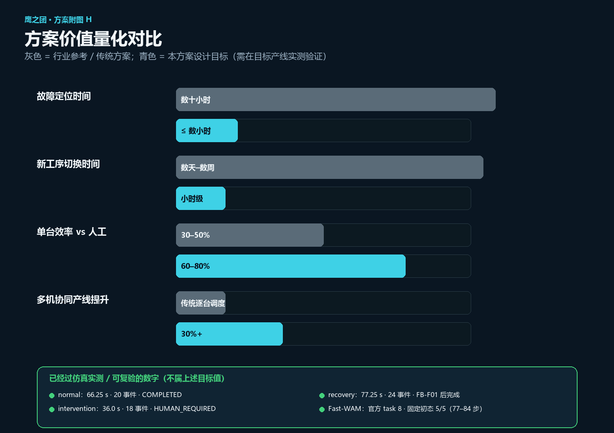
fig-I-四场景视频封面.png（600 KB）
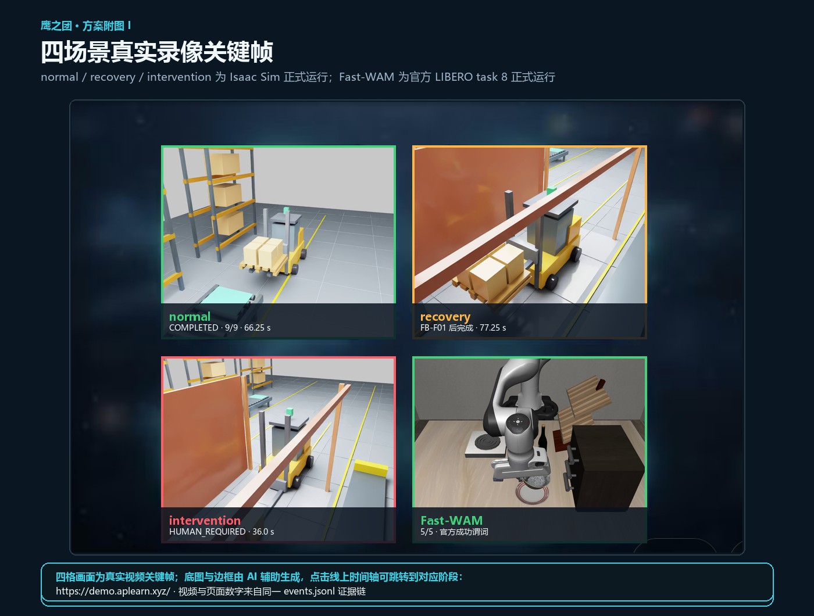
fig-J-体验二维码.png（148 KB）
fig-K-仙工技术栈映射.png（184 KB）
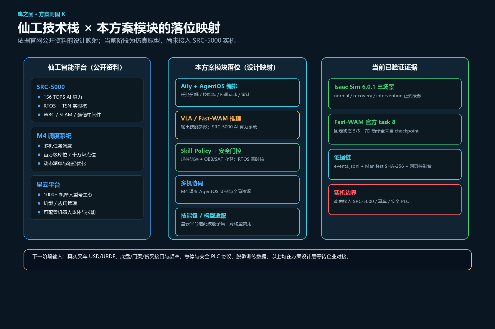
fig-L-影子模式三阶段路线图.png（157 KB）
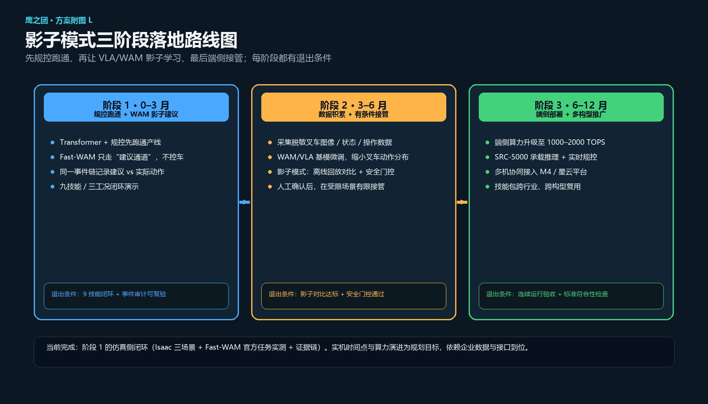
fig-M-技术路线定位图.png（110 KB）
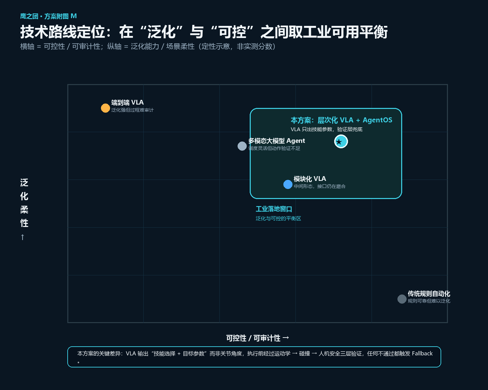
fig-N-场景迭代对比.png（422 KB）
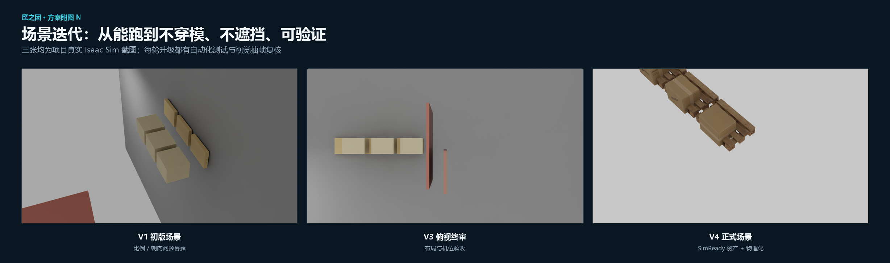